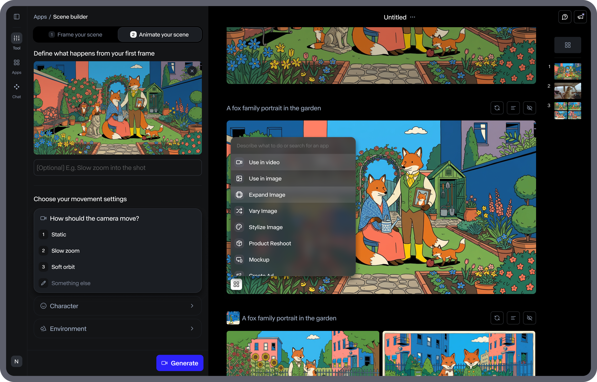

Apps
Use-case-specific apps to get started faster
Most of our prosumers come to Runway to do one thing, and do it really well. Tool Mode worked for Enterprise teams fluent in AI workflows, but prosumers needed a clearer path to the right tool. Apps breaks those workflows into bite-size, single-purpose apps, grouped into starter kits like Film, Marketing and Social, so people can start from what they want to make rather than which model to use.
I contributed to a suite of 20+ apps, including Scene Builder, Multi Shot and Edit Video, and partnered with Product to spin up an Apps Starter Kit landing page that lifted day-1 conversion and retention.
Next, I’m bringing Apps into Agent and designing a new creation mode built for first-time users.



Impact
The numbers are password protected.
That’s not it. Try again.